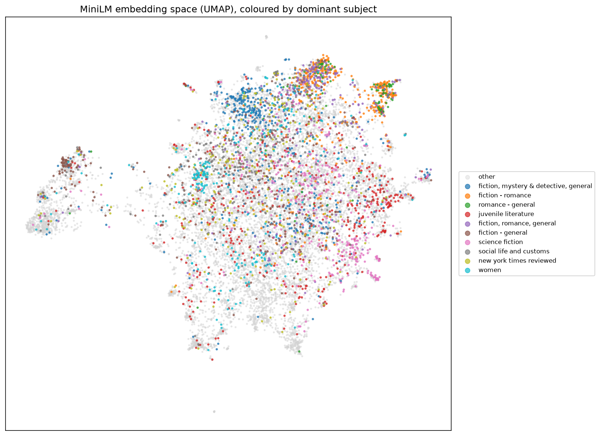
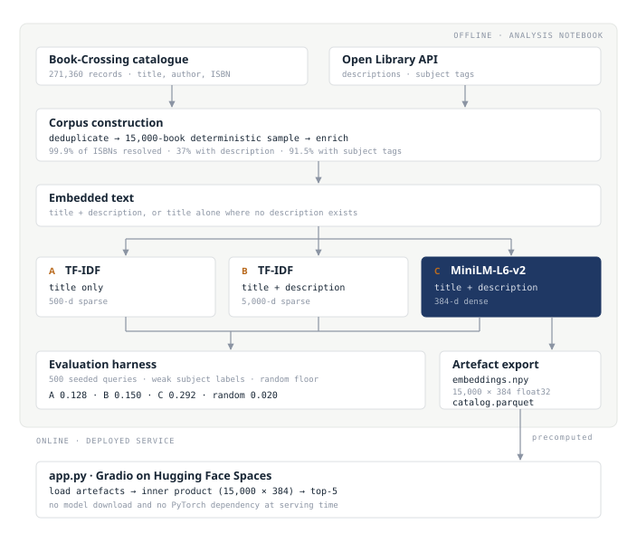

Applied project · Information retrieval · Complete
Semantic Book Recommender
A content-based recommender over a 15,000-book catalogue, retrieved through dense sentence embeddings. The evaluation is structured as a controlled ablation, isolating the contribution of the enriched data from that of the encoder architecture.
The Retrieval Problem
TThe Book-Crossing dataset provides titles, authors, and ISBNs, but lack detailed content metadata. A recommender restricted to this schema must compute similarity from the title string alone. However, book titles are unreliable inputs for content matching: publisher imprints, series titles, and edition details occupy a substantial share of the tokens. Lexical matching cannot isolate these structural metadata tokens from words describing actual subject matter, causing recommendations to be driven by publishing artifacts rather than topic alignment.
Two interventions address this limitation. First, descriptions and subject tags are retrieved from the Open Library API to supply content text where the original catalogue provides none. Second, the feature representation is shifted from sparse lexical vectors to dense sentence embeddings, ensuring vector orientation reflects semantic similarity as oposed to surface-level token overlap.
To isolate the impact of each change, the evaluation uses a three-way comparison. An intermediate variant applies the original lexical representation to the newly enriched text. This design makes the contributions of data enrichment and encoder architecture individually attributable, rather than confounding them in a single before-and-after metric.
Benchmark Results
| Variant | Representation | Input | subject-share@5 | Jaccard@5 | author-match@5 |
|---|---|---|---|---|---|
| A | TF-IDF, lexical | Title only | 0.128 | 0.018 | 0.011 |
| B | TF-IDF, lexical | Title + description | 0.150 | 0.025 | 0.017 |
| C | MiniLM-L6-v2, 384-d dense | Title + description | 0.292 | 0.045 | 0.032 |
| — | Random baseline floor | — | 0.020 | 0.002 | 0.000 |
Measured over 500 seeded queries drawn from the 12,531 books carrying at least two informative subject tags, retrieving five recommendations each. The primary metric records the proportion of recommendations sharing at least one informative subject with the query book.
Holding the representation fixed while adding the enriched description text yields a 17% relative improvement. Holding that text fixed while replacing lexical matching with dense embeddings yields a further 95%. The architectural change therefore contributes approximately five times what the data enrichment contributes, and the final variant sits 14.6 times above the random floor. Splitting by query type, variant C reaches 0.357 on books that carry a description against 0.239 on those that do not, both remaining well clear of the floor.
Retrieval Behaviour
Aggregate metrics establish the direction of the improvement. Individual retrieval outputs characterise it more directly, and both failure modes below are representative rather than selected.
| Query | Lexical (Variant A) | Semantic (Variant C) |
|---|---|---|
| The Hobbit (Young Adult edition) |
Bullfrog and Gertrude Go Camping, The Young Martial Arts Enthusiast, Growing Young | The Lord of the Rings, Lord of the Rings Trilogy, Tolkien: A Biography |
| Pride and Prejudice (Everyman's Classics) |
Moll Flanders, The Koran, Frankenstein | Two further editions of Pride and Prejudice, two other Austen works |
The lexical failures are systematic rather than incidental. In the first case the match is driven by the token Young, carried by the edition name. In the second it is driven by the publisher imprint, returning five unrelated titles that share only their inclusion in the Everyman Classics series. Incorporating descriptions dilutes this metadata signal; semantic encoding largely eliminates it.
Embedding Space Structure

The First Iteration
An earlier version of this recommender was built on the full Book-Crossing catalogue of 271,360 records, using only the fields the dataset provides. Titles were normalised and deduplicated, represented by TF-IDF term weights and averaged Word2Vec vectors, reduced with PCA, and partitioned by K-Means into four clusters selected by elbow inspection. Recommendation proceeded by cosine similarity computed within the query book's assigned cluster, and results were assessed by inspecting the retrieved lists for a handful of query titles.
Reviewing that initial design highlighted three structural flaws. First, titles alone contain minimal content signal because imprint and edition metadata pollute the token space—a problem addressed by the Open Library enrichment. Second, restricting candidate search to a single cluster discards valid near-neighbors: with only four clusters across the catalogue, each partition contained tens of thousands of books, cutting off good candidates without significantly reducing search latency. Third, evaluating performance by manual inspection failed to catch underlying issues.
The third property proved to be important. When title deduplication dropped 35,080 rows from the dataset, the DataFrame index was not reset. Subsequently, non-sequential DataFrame index labels were passed into positional lookups on the feature matrix. This shifted the index references, silently pairing almost every book title with a vector belonging to a completely different book. A guard clause silently discarded labels beyond the matrix bounds, suppressing the error that would otherwise have surfaced the fault. As a result, 239 out of 236,280 books retained correct vector alignment; yet manual inspection of top results appeared reasonable enough that the fault went unnoticed.
Evaluation Design and Its Limits
Open Library subject tags serve as weak ground-truth labels. They are crowdsourced, incomplete and non-standardised, so two semantically related books may carry disjoint tag sets and register as a false miss. Absolute values therefore understate retrieval quality, and the harness is designed as a relative comparison across variants on identical queries and identical labels rather than as an estimate of reader satisfaction.
Uninformative tags appearing on more than 5% of subject-bearing books are filtered before scoring. Without that filter a shared tag such as fiction would satisfy the metric while carrying almost no information about whether two books are related.
The random baseline is evaluated through the exact same pipeline and queries as the model variants, establishing an empirical performance floor rather than relying on an assumed theoretical value. This empirical floor serves as a critical diagnostic component that the first iteration lacked. Without a measured baseline for comparison, silent failures—such as the indexing alignment fault—can easily pass unnoticed because individual outputs appear superficially plausible. A model operating near the empirical floor immediately signals a structural system failure during evaluation.
System Architecture

The evaluation corpus consists of a deterministic 15,000-book sample drawn from the deduplicated Book-Crossing catalogue. This sample was enriched using a rate-limited, resumable script targeting the Open Library API. The pipeline successfully resolved 99.9% of targeted ISBNs, returning descriptions for 37% of the books and subject tags for 91.5%. For books lacking an Open Library description, the system falls back to title-only encoding.
Embeddings are L2-normalised so that an inner product is a cosine similarity, and retrieval is exact nearest-neighbour search across the full catalogue, implemented through FAISS with a NumPy fallback that returns identical results. The notebook exports the catalogue and the precomputed embedding matrix, so the deployed application performs no inference and requires neither PyTorch nor a runtime model download.
Further Work
Incorporating reader ratings from the Book-Crossing dataset represents the most direct path to improving evaluation accuracy. This would support an evaluation grounded in reader behaviour instead of subject tags, and a collaborative component alongside the content-based one. Description coverage at 37% is the baseline, and a secondary metadata source would raise it. On the retrieval side, overall ranking quality could be refined by introducing a two-stage pipeline. In this setup, candidate generation would be followed by a cross-encoder re-ranker applied to the top candidates, alongside popularity de-biasing and Maximal Marginal Relevance (MMR) to promote recommendation diversity.